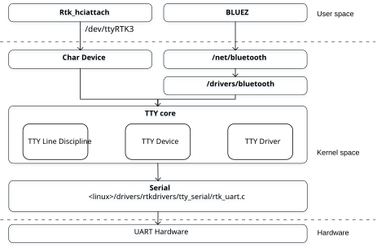
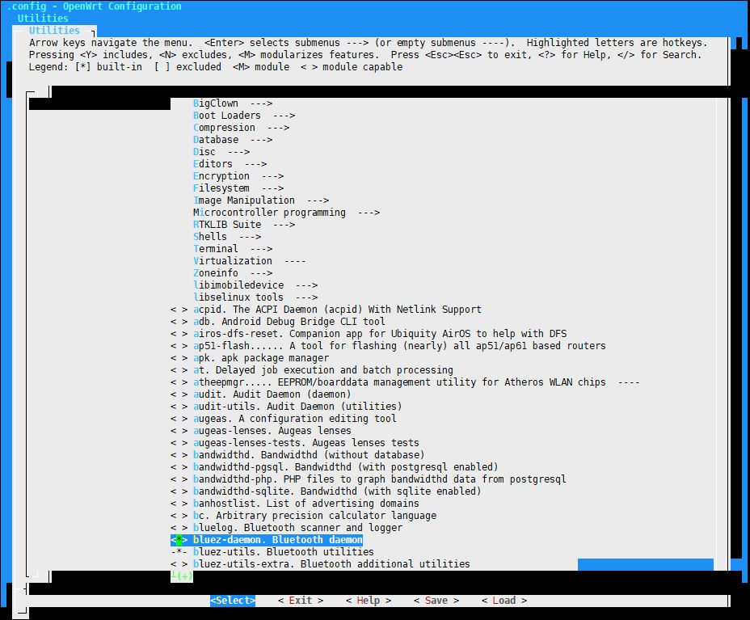

Overview
Bluetooth framework is a whole architecture that include BLUEZ, bluetooth hci and RTK hciattach.
For more details of BLUEZ, refer to: BlueZ.
bluetooth hci, refer to: bluetooth hci
RTK hciattach is used to power on controller, download firmware and configuration to bluetooth controller, and set TTY line discipline as N_HCI.
Architecture
RTK hciattach and bluetooth hci driver architecture is shown in the following figure.
{kind=link}

Configuration
Build Configuration
. Bluetooth daemon
{kind=link}

Controller Configure/FW Path
The following files are Configuration and Firmware patch for Bluetooth controller.
/lib/firmware/rtlbt # pwd
/lib/firmware/rtlbt
/lib/firmware/rtlbt # ls
rtl8730_config rtl8730_fw
Update Configuration and Firmware patch files for controller by replace these two files.
BLUEZ Configuration
openwrt/package/utils/bluez/Makefile, please modify the file if want to open or close functions of BLUEZ like monitor and hcidump.
Please modify the following in Makefile if want to change the version of BLUEZ.
PKG_NAME:=bluez
PKG_VERSION:=5.56
PKG_RELEASE:=1
PKG_SOURCE:=$(PKG_NAME)-$(PKG_VERSION).tar.xz
PKG_SOURCE_URL:=@KERNEL/linux/bluetooth/
PKG_HASH:=59c4dba9fc8aae2a6a5f8f12f19bc1b0c2dc27355c7ca3123eed3fe6bd7d0b9d
Please mask the following in Makefile, place the src code of BLUEZ in the directory of Makefile, and rename src code as src, if want to use the special version of BLUEZ.
PKG_SOURCE:=$(PKG_NAME)-$(PKG_VERSION).tar.xz
PKG_SOURCE_URL:=@KERNEL/linux/bluetooth/
PKG_HASH:=59c4dba9fc8aae2a6a5f8f12f19bc1b0c2dc27355c7ca3123eed3fe6bd7d0b9d
Operation
rtk_hciattach is used to power on controller, download firmware and configuration to bluetooth controller, and set TTY line discipline as N_HCI. hciattach of BLUEZ is not used in Realtek BlueZ HCI UART.
rtk_hciattach -n -s 115200 ttyRTK3 rtk_h4 &
bluetoothd is used to start bluetoothd deamon.
bluetoothd -n -d &
In addition, dbus must be started before bluetoothd.
rm -rf /var/run/dbus.pid
/etc/init.d/dbus start